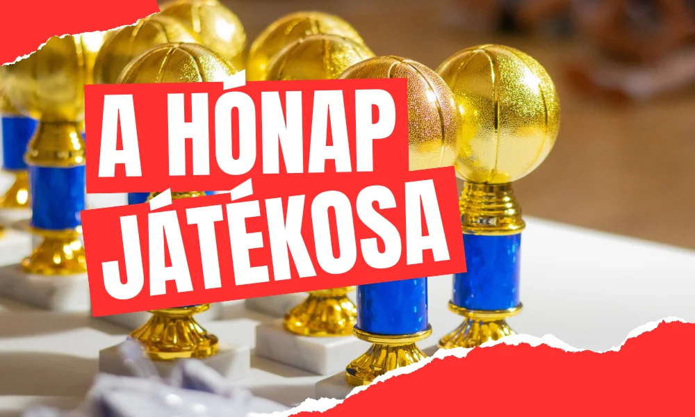

Kettős győzelem a Kenguru Kupa 4. fordulójában
Két magabiztos sikerrel zártuk a fordulót: a Keresztúri Méhecskék és a Budapest Blazers ellen is nyertünk.
Tovább olvasom →Előkészítőtől az U18-ig és a felnőtt NB II-ig – szervezett, szakmailag megalapozott kosárlabda lányoknak és fiúknak.

Minden hónapban kiemeljük azt a játékosunkat, aki szorgalmával, fejlődésével és csapatszellemével a legtöbbet tette a Sasokért.
A hónap sportolóiEgyesületünket 1998-ban alapítottuk azzal a céllal, hogy a kosárlabdát szerető gyerekeknek – lányoknak és fiúknak egyaránt – szervezett keretek között adjunk sportolási lehetőséget a világ egyik legnépszerűbb sportágában.
Kiemelt feladatunk az utánpótlás-nevelés: a tehetséges gyerekek felkutatása, tudásuk megfelelő szintre emelése és sportpályafutásuk segítése.
MisszióinkElőkészítő csoportoktól az U18-ig minden korosztálynak megvan a helye, egészen a felnőtt NB II-es csapatig.
Tapasztalt edzői stábunk korosztályonként, egyénre szabottan fejleszti a játékosokat.
Szakmai együttműködés a Budapest Honvéd kosárlabda-akadémiájával és öt zuglói általános iskolával.
Két magabiztos sikerrel zártuk a fordulót: a Keresztúri Méhecskék és a Budapest Blazers ellen is nyertünk.
Tovább olvasom →A lelátó végig mögöttünk állt – a buzdítás már az első feldobásnál felcsendült.
Tovább olvasom →Várjuk a kosárlabdát szerető lányokat és fiúkat minden korosztályban.